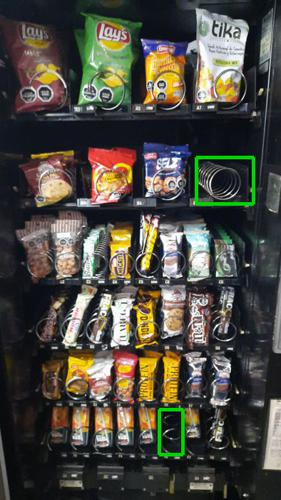
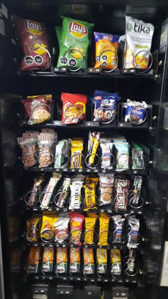

Antes de AbastecerSe detectaron 2 espirales vacios.

id 347.799 |
Luego de AbastecerNo se detectaron espirales vacios.

id 347.800 |
|
| Fecha |
Reporte |
Vacios ANT |
% Abast |
% Quiebre |
Sum QTY |
Rotación Diaria |
Abast hace (días) |
| 05-07-2021 |
Viendo |
2 |
4.0 |
5.0 |
20 |
6 |
3 |
| 02-07-2021 |
Ver |
0 |
6.5 |
0 |
33 |
33 |
1 |
| 01-07-2021 |
Ver |
2 |
7.1 |
5.0 |
36 |
36 |
1 |
| 30-06-2021 |
Ver |
2 |
2.4 |
5.0 |
12 |
12 |
1 |
| 29-06-2021 |
Ver |
0 |
0 |
0 |
0 |
0 |
4 |
| 25-06-2021 |
Ver |
0 |
0 |
0 |
0 |
0 |
1 |
|
|
|
Se abasteció la máquina con:
Total de 20 unidades de 3 productos.
| Qty. |
Producto |
SubFamilia |
Familia |
| 8 |
Brownie Sin Azucar 12 Uni |
Brownie |
Snack |
| 6 |
Andifrut Naranja Tetra 20 |
Jugos |
Tetras |
| 6 |
Andifrut Piña Tetra 200 C |
Jugos |
Tetras |
| Productos más abastecidos en últimas 6 semanas:
| Nro. Abast |
Qty/Abast |
Producto |
Abast hace (días) |
Fecha |
| 6 |
7 |
Frac Clasica Individual 3 |
3 |
02-07-2021 |
| 5 |
8 |
Andifrut Naranja Tetra 20 |
0 |
05-07-2021 |
| 5 |
8 |
Galleta Din Don 24Ux46Gr |
3 |
02-07-2021 |
| 5 |
7 |
Tuareg Coco Indiv. 24X48 |
3 |
02-07-2021 |
| 4 |
9 |
Andifrut Durazno Tetra 20 |
5 |
30-06-2021 |
| Productos menos abastecidos en últimas 6 semanas:
| Nro. Abast |
Qty/Abast |
Producto |
Abast hace (días) |
Fecha |
| 1 |
4 |
De Todito I Evercrisp 50G |
32 |
03-06-2021 |
| 1 |
6 |
Papas Mediterraneas Jamon |
42 |
24-05-2021 |
| 1 |
6 |
Leche Tetra Mono Frutilla |
42 |
24-05-2021 |
| 1 |
7 |
Wapps 65Gr 24Un |
31 |
04-06-2021 |
| 1 |
7 |
Papas Mediterraneas Orega |
33 |
02-06-2021 |
|
|